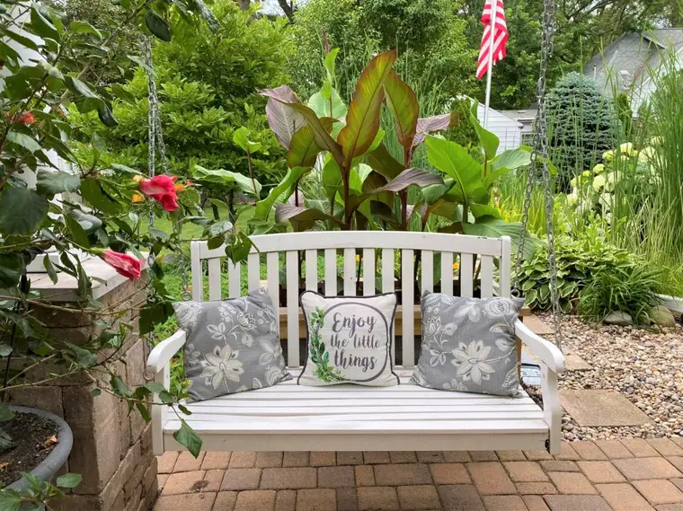
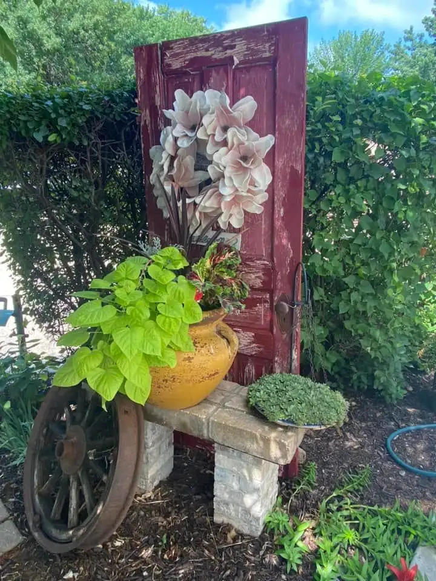
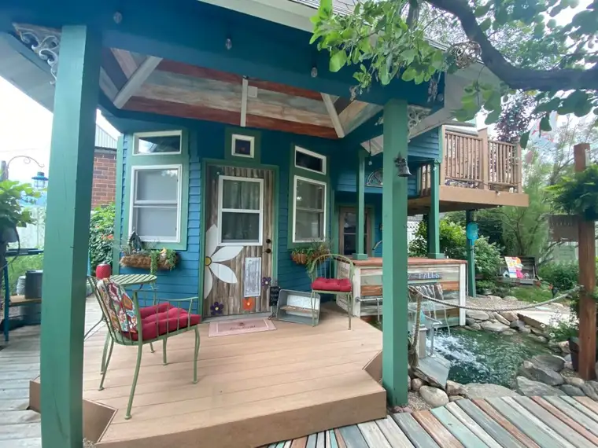

Our new priest called it “supernatural confidence,” but as I ponder these words in the wake of the overturning of Roe v. Wade and flurry that followed, my mind has turned to the Wizard of Oz’s Cowardly Lion, and how much he desired courage, and needed God’s grace, to get through his fears.
“What’ve they got that I ain’t got?” he asked, after reciting a litany of items possessing strength and fortitude. “Courage!”
In his first Sunday Mass homily at our parish here in Fargo, N.D., Fr. Luke Meyer spoke right to my heart while mentioning the supernatural confidence our Lord wishes to bring us right now; the same kind he gave to his followers as he sent them out to preach the Good News to all the world.
In that Sunday’s reading from Luke 10, Jesus told his 72 friends that he was sending them out, “like lambs among wolves.” Yikes! Our friend the Cowardly Lion would be grabbing his tail to wipe his fear-filled tears about now!
It’s too bad he did not have Fr. Meyer at his disposal to remind him that good is better than bad; light more powerful than dark.
“That might make some shudder,” he told us, but it’s intended by Jesus to inspire confidence in his sheep. “I’m sending you out into this evil, but I’ll be with you,” he paraphrased. “He’s saying, ‘Go out into this world of burdens, even these places that might have demons…you will have confidence to do my will.’”
In the same chapter, Jesus reminds them, “I have observed Satan falling like lightning from the sky.” “That’s how weak evil is at the end of the day,” our priest said, noting that sometimes, we give evil too much credit. “It wasn’t a slow fall, like a parachute,” he noted, “but a quick fall!”
In the snap of God’s fingers, Satan fell. And so will the evil around us when we persevere in supernatural confidence; a confidence, Fr. Meyer said, that is a gift, not something we can achieve on our own power.
I also love Jesus’ follow-up: “I have given you the power to ‘tread upon serpents,’ and nothing will harm you.” The serpents seem to be slithering swiftly lately.
Fr. Meyer reminded us that Jesus promised the gates of hell would not prevail against us. We often think of this wrongly, he pointed out. “It’s as if we’re holed up in a bunker waiting for hell to break through,” he said, assuring that it’s really the opposite; we are not on the defense when walking with God, but on the offense.
Finally, he said we need humility for this to work well; that, though it might seem paradoxical, the more humility we have, the more we can grow in confidence in God. “In him is an infinite source of comfort and strength.”
I’d like to add one more thought to this helpful homily. It has to do with how we might practically be more open to this gift of confidence and courage. Recently, I was reminded that in times when our confidence reserves are low we may need to rest a while in Jesus. The demands of life can zap us of this fortitude in a hurry in the times in which we’re living. Seeking places of refuge seems, to me, part of the equation.

And recently, I found an unexpected refuge when scouring places to stay near a college where my son would be attending tennis camp. It was a last-minute find, an adorable home turned into a resting spot for weary travelers. I booked myself for one night, and ended up staying three.


And as I rested in this beautiful place filled with touches of love in every nook and cranny, I knew that God had called me there, to restore in order to regain my strength, my courage, my confidence in whatever lies ahead.
I’ll end with the prayer Fr. Meyer offered at the end of his homily:
“Come Holy Spirit, we ask you to fill our hearts. Give us the grace to desire a deeper humility that bears fruit in a deeper confidence. And may we pursue the good in the face of great obstacles. May we lay aside our false fears and rejoice in the goodness that you have called us to. Oh, Holy Spirit, give us this great gift of confidence and victory in our life.”
Q4U: Have you lost your courage in recent days? Where can you go to regain what is needed to continue in supernatural confidence?